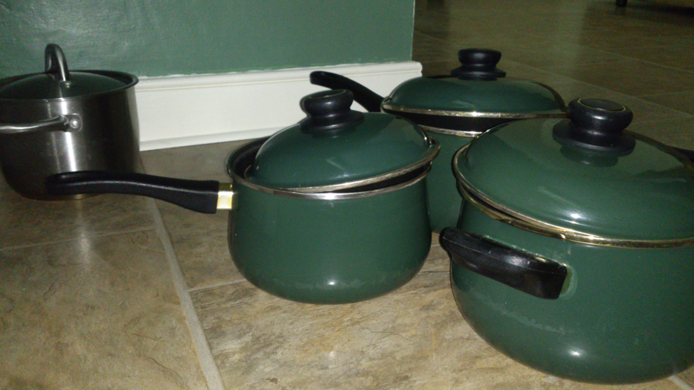
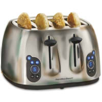
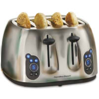

Pot's Story
Pot felt different to those around her when she first took up residence in the cupboard. Everyone else there was a unit. They had been made, packaged and bought together and were already a tight knit family when she joined them. At first she thought they were just skeptical of her, thinking she was there to replace one of them(a statement known by all to be entirely false). She later discovered the true reasoning behind it was that she was just different to the other pots. There was more than a ten year gap in design making her not only different by her look and make up, but also her ability to fit in with the others. Her diameter made it impossible for her to fit comfortably inside the other pots at night in order to sleep and so was just left to a corner by herself. Even outside the cupboard she was treated differently by the other appliances. Word travelled fast in a small kitchen and soon she felt all too alone in her new surroundings to cope. Soon she fell into despair and grime. She began to stop caring if something was encrusted onto her or if she had splatters on her outside. It was only by chance she got to meet Sandwich Maker one day. He was the first appliance to show any kindness or concern for her. They soon became close friends though they rarely do cross paths, Sandwich Maker often kept to the press unused.



Sometimes the loneliness is just too much to handle.
 
